Debugging
Shannon Pileggi
Getting started
Licensing
Workshop materials have been adapted from the 2020 RStudio What They Forgot To Teach You About R Workshop.
This work is licensed under a Creative Commons Attribution-ShareAlike 4.0 International License (CC BY-SA4.0).
Checklist
R installed? Pretty recent?
Current version 4.2.0
RStudio installed?
I’m on 2022.02.3+492
Additional resources
WTF Ch 11 Debugging R code
https://rstats.wtf/debugging-r-code.htmlAdvanced R Ch 22 Debugging
https://adv-r.hadley.nz/debugging.htmlJenny Bryan 2020 RStudio Conf Keynote Object of type closure is not subsettable
https://github.com/jennybc/debugging#readmeAmanda Gadrow 2018 Webinar Debugging techniques in RStudio
https://www.rstudio.com/resources/webinars/debugging-techniques-in-rstudio/Jim Hester 2019 Introduction to debugging in R and RStudio
https://www.jimhester.com/talk/2019-crug-debugging/Maëlle Salmon 2021 How to become a better R code detective?
https://masalmon.eu/2021/07/13/code-detective/Kara Woo 2019 RStudio Conf Box plots A case study in debugging and perseverance https://www.rstudio.com/resources/rstudioconf-2019/box-plots-a-case-study-in-debugging-and-perseverance/
![A cartoon of a fuzzy round monster face showing 10 different emotions experienced during the process of debugging code. The progression goes from (1) “I got this” - looking determined and optimistic; (2) “Huh. Really thought that was it.” - looking a bit baffled; (3) “...” - looking up at the ceiling in thought; (4) “Fine. Restarting.” - looking a bit annoyed; (5) “OH WTF.” Looking very frazzled and frustrated; (6) “Zombie meltdown.” - looking like a full meltdown; (7) (blank) - sleeping; (8) “A NEW HOPE!” - a happy looking monster with a lightbulb above; (9) “insert awesome theme song” - looking determined and typing away; (10) “I love coding” - arms raised in victory with a big smile, with confetti falling.](img/debugging.jpg)
Artwork by @allison_horst.
Troubleshooting
1. Search
Google exact error message
keyword search on RStudio community
keyword search on stackoverflow,
[r]tag
Samantha Csik 2022 R-Ladies St. Louis Workshop Teach Me How To Google: slides, recording
2. Reset
Have you tried turning it OFF and ON again?
Restart R, especially when things get weird.
Session -> Restart R, or
Ctrl + Shift + F10 (Windows),
Cmd + Shift + 0 / Cmd + Shift + F10 (Mac)
3. Reprex
minimum reproducible example
https://reprex.tidyverse.org/ make a reprex….. please by Sharla Gelfand (2021)
slides: https://make-a-reprex-please.netlify.app/#1
recording: https://www.youtube.com/watch?v=G5Nm-GpmrLw
minimum
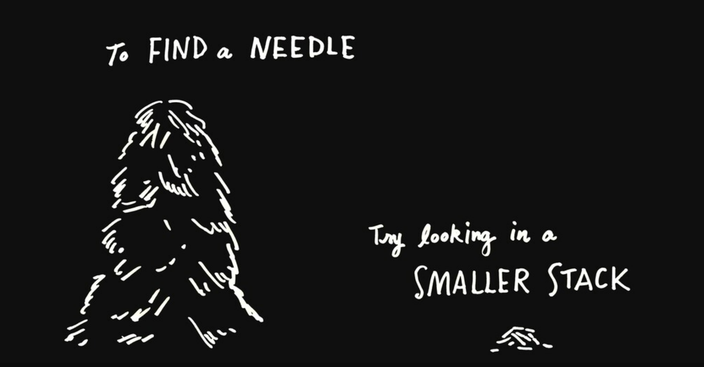Jenny Bryan (2020) Object of type closure is not subsettable
reproducible example
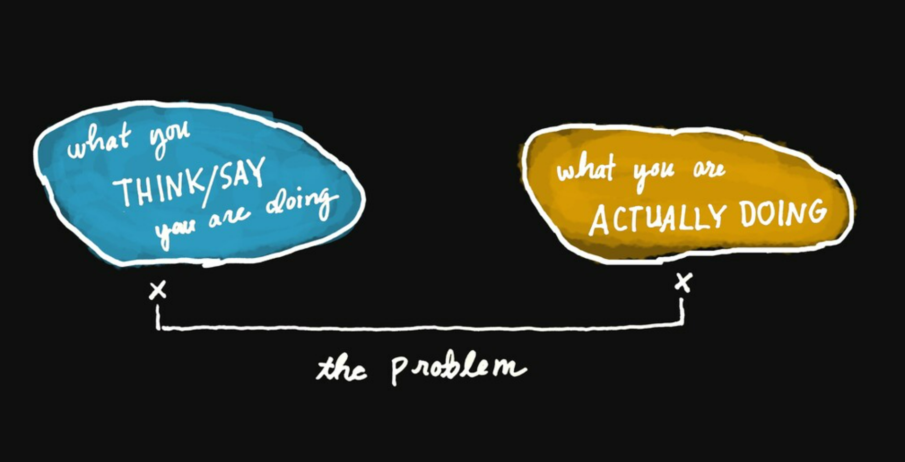Jenny Bryan (2020) Object of type closure is not subsettable
why reprex
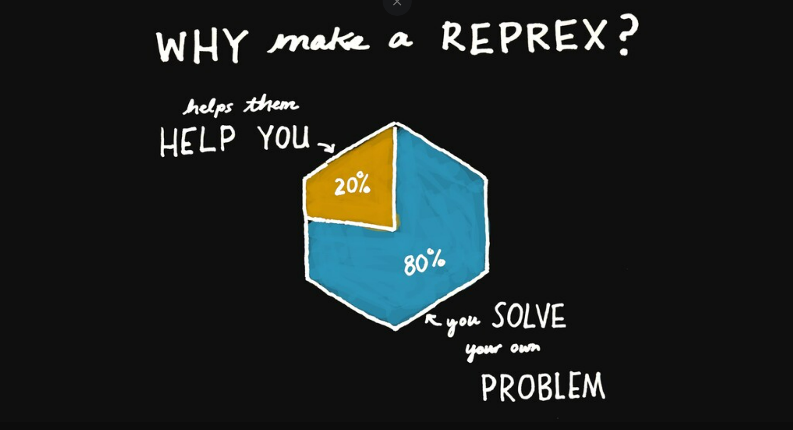Jenny Bryan (2020) Object of type closure is not subsettable
Review
Troubleshooting strategies:
Search
Reset
Reprex
But what if
Moving on
from troubleshooting to…
formal debugging techniques.
Key concepts
location where did the error occur
context why did the error occur
non-interactive vs interactive
debugging your code vs their code
Methods
| Function | Use |
|---|---|
print() / cat() / message() |
output diagnostic information in code |
traceback() |
locate error |
browser() |
open interactive debugger |
debug() / debugonce() |
automatically open debugger when function called |
trace() |
start debugger at specific location in function |
Sourcing
⚠️ name your script with functions
⚠️ source your script with functions
for the best debugging experience 😎

Set up
Debugging your own code
print()
cat()
traceback()
shows the sequence of calls that lead to the error.
the trace back is also known as:
call stack, stack trace, & back trace
Richer traceback
Richer traceback
options(error = rlang::entrace)
could go in your .Rprofile
traceback vs rlang functions
Numbering and ordering differs between traceback() and rlang functions.
browser()
browser() opens the interactive debugger.
Modify the function by inserting a
browser()statement.Source the function.
Execute the function.
Interactive debugger
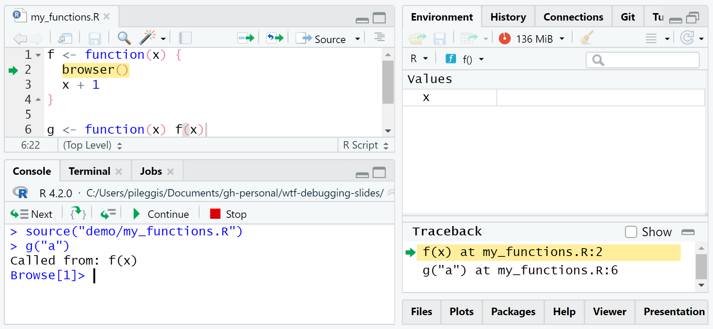Interactive debugger tips
Investigate objects: ls(), str(), ls.str(), print()
Control execution:
| command | operation |
|---|---|
n |
next statement |
c |
continue |
s |
step into function call |
f |
finish loop / function |
where |
show previous calls |
Q |
quit debugger |
:::
Debugging in RStudio
Editor breakpoints
red circle = breakpoint = browser()
(but you don’t have to change your code)
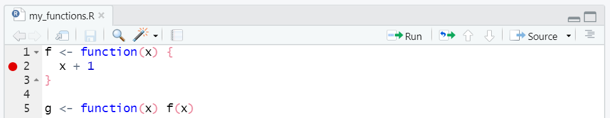Set / re-set an editor breakpoint:
click to the left of the line number in the source file
press Shift+F9 with your cursor on the line
Editor breakpoints
red circle = breakpoint = browser()
(but you don’t have to change your code)
To activate, either
click IDE Source button, or
debugSource(“demo/my_functions.R”)
IDE on error
Automatically invoke actions on error.
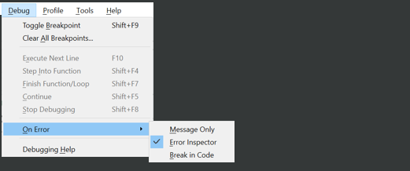IDE message only
IDE error inspector
IDE break in code
Debugging console
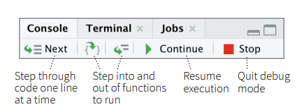Error inspector
# IDE Error Inspector not triggered
f <- function(x) x + 1
g <- function(x) f(x)
g("a")
# IDE Error Inspector not triggered
strsplit(factor("a,b"), ",")
# IDE Error Inspector not triggered
f <- function(x) strsplit(x, ",")
f(factor("a,b"))
# IDE Error Inspector yes triggered
g <- function(x) f(x)
g(factor("a,b"))The error inspector is only invoked
if your code is involved.
Debugging others’ code
debug()
debug() = browser()/ breakpoint in first line of function
interactive debugger is initiated every time
g()is executed, untilundebug("g")depending on function internals, this can… trap you in the debugger 😬
debugonce()
debugonce() = browser()/ breakpoint in first line of function
one time only!
interactive debugger initiated a single time when
g()is executed
options(error = recover)
we already discussed
options(error = rlang::entrace)
for a richer traceback on error
🤠 options(error = recover)
displays an interactive prompt with the traceback
allows you to select the frame for entering the debugger
recover example
trace() overview
trace() is a more flexible version of debug()
trace(fun, browser)=debug(fun)equivalent to inserting
broswer()in first line of function
you an also insert any code at any location in function
trace(fun, browser, at = 2)
insertsbrowser()at second step offun
untrace(fun) cancels the tracing
⚠️ trace() requires { in function definition
trace() default
trace(colSums, browser)=debug(colSums)equivalent to inserting
broswer()in first line of function
if we had the source code
navigating function steps
investigate 🧐 the function with as.list() + body()
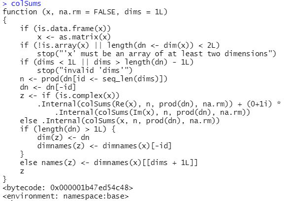
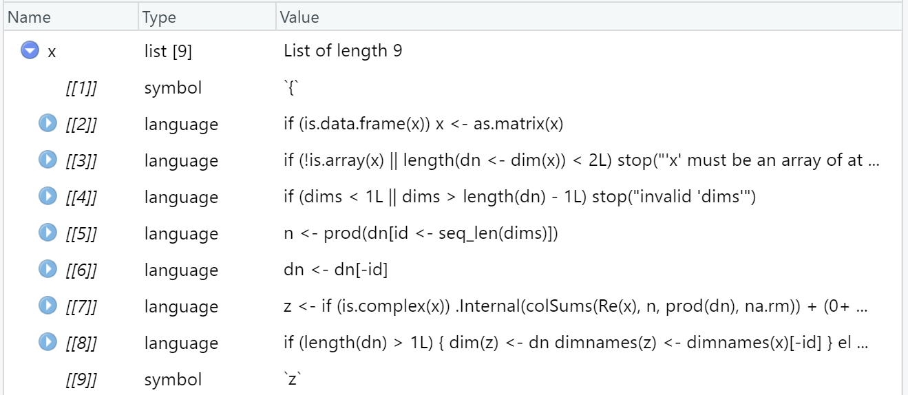
identify function step
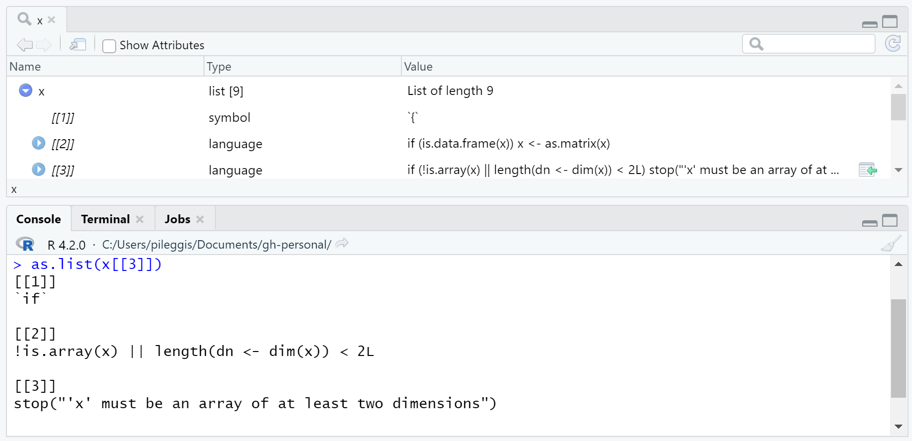trace() at specified step
Special cases
Warnings
If you want to dig deeper into a warning, you can convert them to errors to initiate debugging tools.
?options
options(warn = 0) # default, stores warnings until top-level function returns
options(warn = 1) # warnings are printed as they occur
options(warn = 2) # upgrades warnings to errors
# initiate recover on warning
options(warn = 2, error = recover)
# restore original settings
options(warn = 0, error = NULL)Piped expressions
tracebacks can be verbose with pipes
gives trimmed tracebacks when using pipes
Matt Dray 2019 blog post Fix leaky pipes in R
Rmarkdown
Troubleshooting:
rmarkdown chunk option
error = TRUEenables knitting with errorsinsert
knitr::knit_exit()and interactively work through .Rmd
Debugging:
Adv R Ch 22.5.3 RMarkdown https://adv-r.hadley.nz/debugging.html#rmarkdown
WTF Ch 11.4 Debugging in Rmarkdown documents https://rstats.wtf/debugging-r-code.html#debugging-in-r-markdown-documents
Go forth, and learn from your bugs!
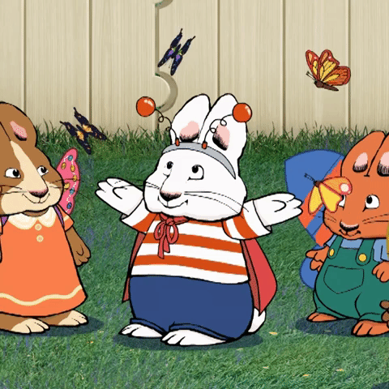